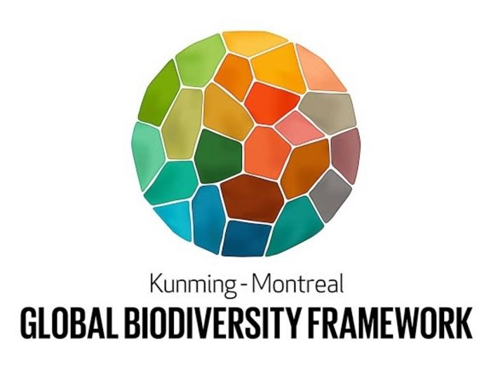

Open Science in the world
The Open Science by UNESCO
Open science aims at making scientific knowledge openly available, accessible and reusable. The key elements of open science include: open access to scientific knowledge (including open access to scientific publications, data, educational resources, software and hardware); open infrastructures; open engagement with society and dialogue with indigenous and traditional knowledge systems, among others1.

UNESCO asks member States to :
1. Promote a shared understanding of open science and set out diverse paths to achieving it
2. Develop an enabling policy environment for open science
3. Invest in infrastructure and activities that contribute to open science
4. Invest in training, education, digital literacy and capacity-building to support open science
5. Foster a culture of open science and align incentives to support it
6. Promote innovative approaches for open science at all stages of the scientific process
7. Encourage international and multi-stakeholder cooperation in the context of open science to reduce gaps in technology and knowledge
Open Science in Europe
The ambition of the European Open Science Cloud, known as EOSC, is to develop a Web of FAIR Data and Services for science in Europe. The implementation of EOSC is based on a long-term process of alignment and coordination pursued by the Commission since 2015.1.

EOSC will also improve the situation for researchers in many ways, namely by :
1. Enhancing scientific research by providing access to a weath of data and research outputs from various fields and institutions.
2. Fostering innovation by making it easier for researchers to share, collaborate and build on each others’ work.
3. Improving transparency and reproducibility of research by making data and methods more open and accessible
4. Reducing data silos and duplication of efforts by promoting data sharing and reuse
5. Facilitating interdisciplinarity research and cross-sectoral collaboration by making data and resources from different domains more easily available
CARE principles
Definitions
Indigenous data are data, information, and knowledge, in any format, that impact Indigenous Peoples, nations, and communities at the collective and individual levels; data about their resources and environments, data about them as Individuals, and data about them as collectives1,2.

to go further
- GIDA : Global Indigenous Data Alliance
- GBIF : Global Biodiversity Information Facility Open data for people and purpose: GBIF establishes task group on Indigenous data governance
- GEO : Group on Earth Observation
- DoraNum
https://learning.nceas.ucsb.edu/2023-06-delta/session_16.html
CARE principles
The Kunming-Montreal Global Biodiversity Framework
The Kunming-Montreal Global Biodiversity Framework (KMGBF) was adopted during the fifteenth meeting of the Conference of the Parties (COP 15) […] Among the Framework’s key elements are 4 goals for 2050 and 23 targets for 2030.

Target 21 :Ensure That Knowledge Is Available and Accessible To Guide Biodiversity Action
Ensure that the best available data, information and knowledge, are accessible to decision makers, practitioners and the public to guide effective and equitable governance, integrated and participatory management of biodiversity, and to strengthen communication, awareness-raising, education, monitoring, research and knowledge management and, also in this context, traditional knowledge, innovations, practices and technologies of indigenous peoples and local communities should only be accessed with their free, prior and informed consent[1], in accordance with national legislation1.

The FAIR & CARE principles
Differences and complementarities
Operationalizing the FAIR Principles for scientific data with the CARE Principles for Indigenous Data Governance enhances machine actionability and brings people and purpose to the fore to resolve Indigenous Peoples’ rights to and interests in their data across the data lifecycle1.


Toward an implementation of the FAIR & CARE Principles across the data lifecycle.